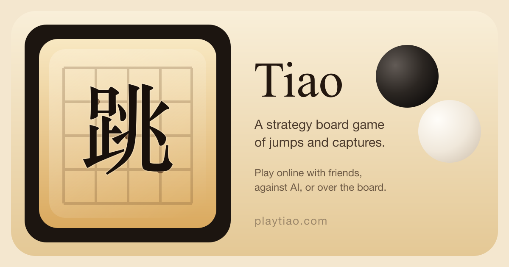
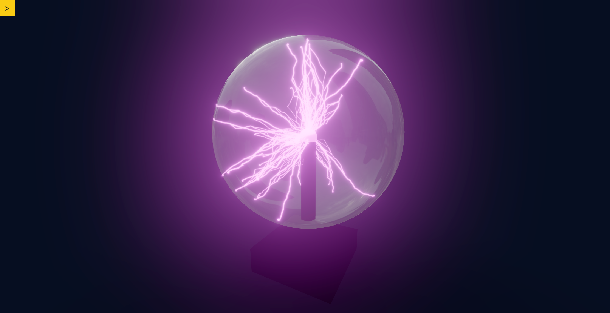
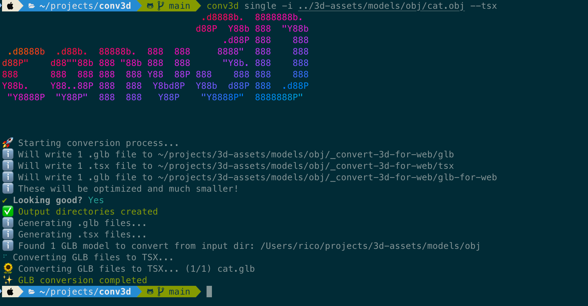
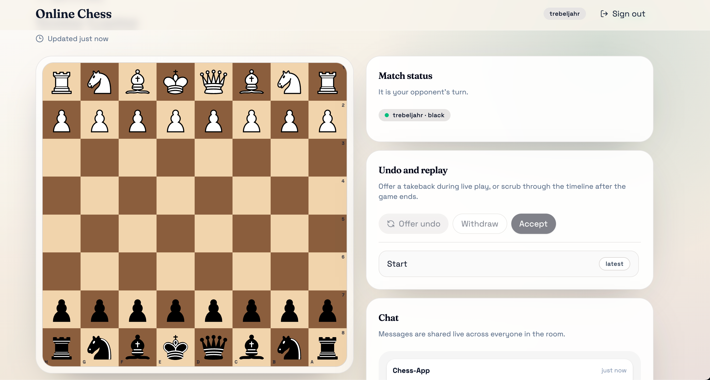
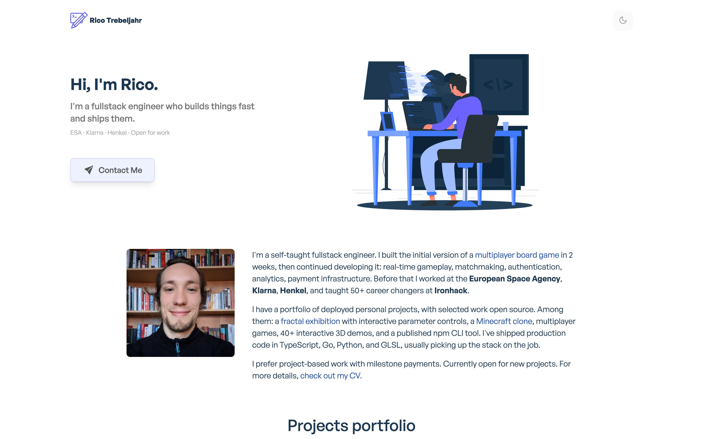

Rico Trebeljahr
Full-stack engineer
portfolio.trebeljahr.com
Full-stack engineer
Projects, CV and contact.
Games, 3D demos and tools.
portfolio.trebeljahr.com

Full-stack engineer · portfolio and CV
portfolio.trebeljahr.comNext.js · MIT




Full-stack engineer
portfolio.trebeljahr.com